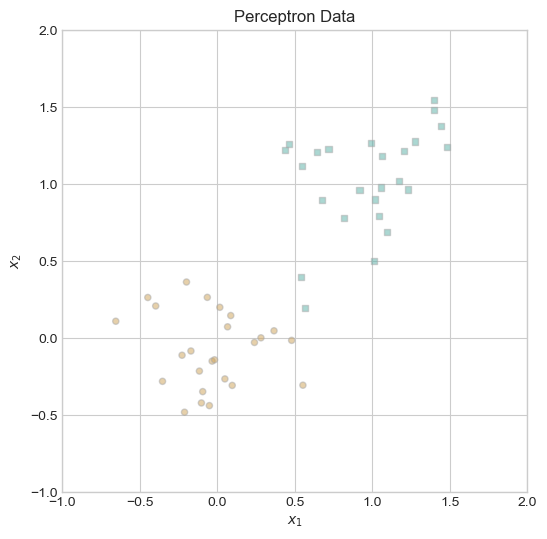
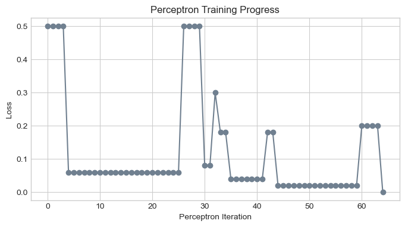
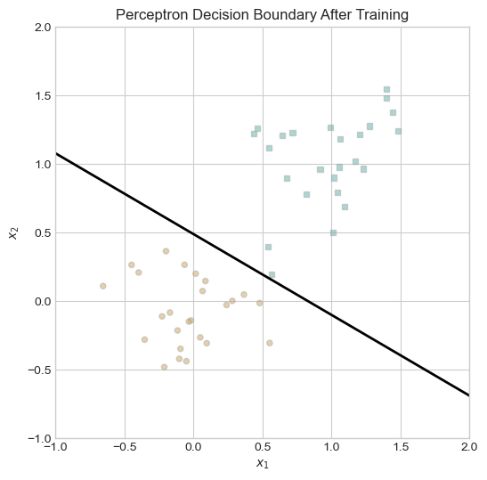
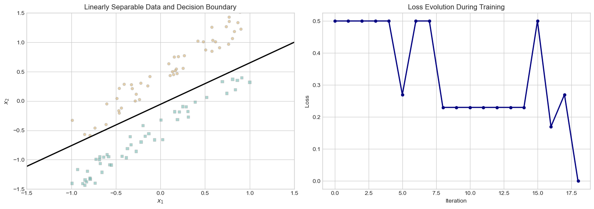
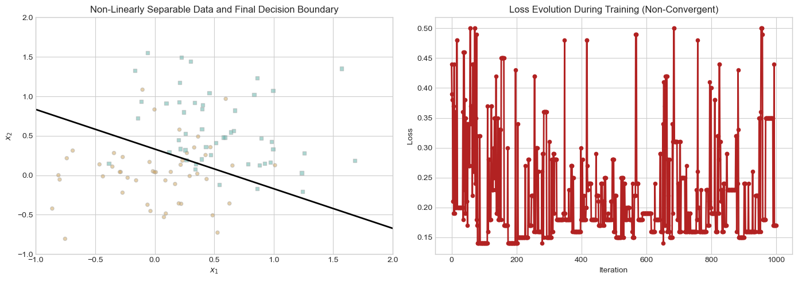
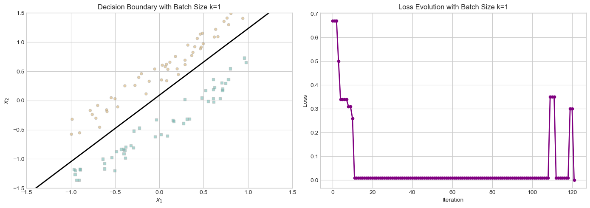
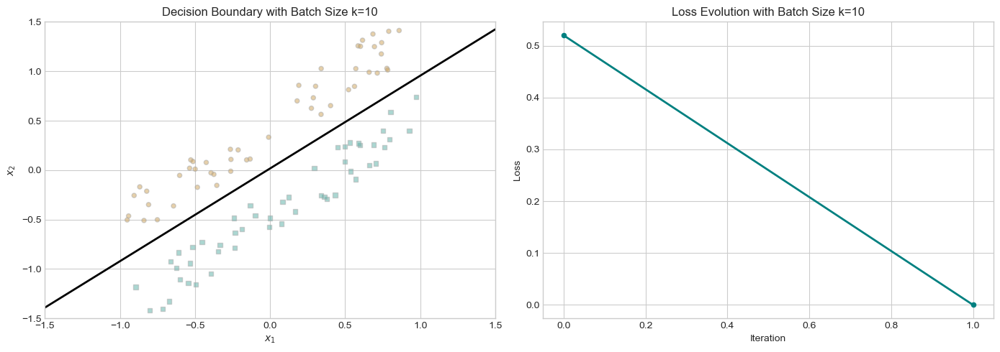

The autoreload extension is already loaded. To reload it, use:
%reload_ext autoreload
Link to Source Code
The complete perceptron implementation can be found in my Github repository.
Abstract
This blog post explores the implementation and behavior of the perceptron algorithm. The perceptron serves as a binary linear classifier that learns a decision boundary to separate data into two classes. Through detailed experiments, we investigate the convergence properties of the perceptron on linearly separable and non-separable data, and examine its extension to minibatch learning. By implementing the algorithm from scratch using PyTorch, we gain insights into its mathematical foundations, computational efficiency, and limitations.
Part A: Implementation
Implementation Walkthrough
The heart of the perceptron algorithm lies in the grad() method, which accurately implements the mathematical update rule:
def grad(self, X, y):# Convert y from {0,1} to {-1,1} for perceptron math y_ =2*y -1# Compute scores scores =self.score(X)# Identify misclassified points misclassified = (scores * y_ <=0).float()# Calculate update vector using vectorized operationsreturn-torch.sum(misclassified.unsqueeze(1) * y_.unsqueeze(1) * X, dim=0)
This implementation directly translates the formula \(-1[s_i(2y_i-1) < 0](2y_i-1)x_i\) by: 1. Converting labels to {-1, 1} format 2. Computing whether each point is misclassified using the sign comparison 3. Calculating the update vector in a vectorized manner
To check my implementation on the mini loop, first, let’s set up the imports and data generation:
import torchfrom matplotlib import pyplot as pltimport numpy as npplt.style.use('seaborn-v0_8-whitegrid')# Set random seed for reproducibilitytorch.manual_seed(1234)# Function to generate perceptron datadef perceptron_data(n_points=300, noise=0.2, p_dims=2): y = torch.arange(n_points) >=int(n_points/2) X = y[:, None] + torch.normal(0.0, noise, size=(n_points, p_dims)) X = torch.cat((X, torch.ones((X.shape[0], 1))), 1)return X, y# Function to plot perceptron datadef plot_perceptron_data(X, y, ax):assert X.shape[1] ==3, "This function only works for data created with p_dims == 2" targets = [0, 1] markers = ["o", ","]for i inrange(2): ix = y == targets[i] ax.scatter(X[ix,0], X[ix,1], s=20, c=2*y[ix]-1, facecolors="none", edgecolors="darkgrey", cmap="BrBG", vmin=-2, vmax=2, alpha=0.5, marker=markers[i]) ax.set(xlabel=r"$x_1$", ylabel=r"$x_2$")# Function to draw a decision boundary linedef draw_line(w, x_min, x_max, ax, **kwargs): w_ = w.flatten() x = torch.linspace(x_min, x_max, 101) y =-(w_[0]*x + w_[2])/w_[1] l = ax.plot(x, y, **kwargs)
Next, let’s generate and visualize the data:
# Generate 2D data with some noiseX, y = perceptron_data(n_points=50, noise=0.3)# Visualize the datafig, ax = plt.subplots(1, 1, figsize=(6, 6))ax.set(xlim=(-1, 2), ylim=(-1, 2))plot_perceptron_data(X, y, ax)plt.title("Perceptron Data")plt.show()

Now, let’s run the perceptron training loop and visualize the results:
# Instantiate a model and an optimizerp = Perceptron() opt = PerceptronOptimizer(p)loss =1.0# Initial lossmax_iter =1000# Safety limititer_count =0# For keeping track of loss valuesloss_vec = []n = X.size()[0]# Training loopwhile loss >0and iter_count < max_iter: loss = p.loss(X, y).item() loss_vec.append(loss)# Pick a random data point i = torch.randint(n, size=(1,)) x_i = X[[i],:] y_i = y[i]# Perform a perceptron update using the random data point opt.step(x_i, y_i) iter_count +=1print(f"Final loss: {loss:.4f}")print(f"Number of iterations: {iter_count}")
Final loss: 0.0000
Number of iterations: 65
The perceptron algorithm achieves Loss = 0, indicating that it has perfectly classified the training data.
Let’s visualize the training progress:
# Plot the loss over iterationsplt.figure(figsize=(8, 4))plt.plot(loss_vec, color="slategrey")plt.scatter(np.arange(len(loss_vec)), loss_vec, color="slategrey")plt.xlabel("Perceptron Iteration")plt.ylabel("Loss")plt.title("Perceptron Training Progress")plt.grid(True)plt.show()# Plot the final decision boundaryfig, ax = plt.subplots(1, 1, figsize=(6, 6))ax.set(xlim=(-1, 2), ylim=(-1, 2))plot_perceptron_data(X, y, ax)draw_line(p.w, -1, 2, ax, color="black", linewidth=2)plt.title("Perceptron Decision Boundary After Training")plt.show()


Part B: Experiments
In this section, we investigate the behavior of the perceptron algorithm under different data conditions, illustrating key properties of the algorithm through three experiments.
Let’s start with functions to demonstrate the three experiments
# Set style and random seedplt.style.use('seaborn-v0_8-whitegrid')torch.manual_seed(42)# Helper functionsdef generate_non_separable_data(n_points=100):"""Generate data that is not linearly separable."""# Generate two overlapping Gaussian distributions n_per_class = n_points //2# Class 0: centered at (0, 0) X0 = torch.normal(0.0, 0.5, size=(n_per_class, 2))# Class 1: centered at (0.5, 0.5) X1 = torch.normal(0.5, 0.5, size=(n_per_class, 2))# Combine features X = torch.zeros((n_points, 3)) # Include bias term X[:n_per_class, :2] = X0 X[n_per_class:, :2] = X1 X[:, 2] =1.0# Bias term# Create labels y = torch.zeros(n_points) y[n_per_class:] =1return X, ydef generate_linearly_separable_data(n_points=100, margin=0.1):""" Generate linearly separable data with a clear margin between classes. """# Generate half points for each class n_per_class = n_points //2# Class 0: points above the line y = x + margin x0 = torch.rand(n_per_class) *2-1# x values in [-1, 1] y0 = x0 + margin + torch.rand(n_per_class) *0.5# points above the line# Class 1: points below the line y = x - margin x1 = torch.rand(n_per_class) *2-1# x values in [-1, 1] y1 = x1 - margin - torch.rand(n_per_class) *0.5# points below the line# Combine features X = torch.zeros((n_points, 3)) # Include bias term X[:n_per_class, 0] = x0 X[:n_per_class, 1] = y0 X[n_per_class:, 0] = x1 X[n_per_class:, 1] = y1 X[:, 2] =1.0# Bias term# Create labels y = torch.zeros(n_points) y[n_per_class:] =1return X, ydef train_perceptron(X, y, max_iter=1000):"""Train perceptron and return model, loss history, and iteration count.""" p = Perceptron() opt = PerceptronOptimizer(p) loss =1.0 iter_count =0 loss_vec = [] n = X.size()[0]while loss >0and iter_count < max_iter:# Track progress loss = p.loss(X, y).item() loss_vec.append(loss)# Pick a random data point i = torch.randint(n, size=(1,)) x_i = X[[i],:] y_i = y[i]# Perform update opt.step(x_i, y_i) iter_count +=1return p, loss_vec, iter_count
Now let’s implement the three experiments:
Experiment 1: Linearly Separable Data
# Generate explicitly separable dataX, y = generate_linearly_separable_data(n_points=100, margin=0.2)# Train the perceptronp, loss_vec, iter_count = train_perceptron(X, y)print(f"Converged to zero loss: {loss_vec[-1] ==0}")print(f"Iterations required: {iter_count}")# Create visualizationfig, (ax1, ax2) = plt.subplots(1, 2, figsize=(14, 5))# Plot the data and decision boundaryplot_perceptron_data(X, y, ax1)draw_line(p.w, -1.5, 1.5, ax1, color="black", linewidth=2)ax1.set_title("Linearly Separable Data and Decision Boundary")ax1.set(xlim=(-1.5, 1.5), ylim=(-1.5, 1.5))# Plot the loss over timeax2.plot(loss_vec, color="navy", linewidth=2)ax2.scatter(np.arange(len(loss_vec)), loss_vec, color="navy", s=20)ax2.set_xlabel("Iteration")ax2.set_ylabel("Loss")ax2.set_title("Loss Evolution During Training")ax2.grid(True)plt.tight_layout()plt.show()
Converged to zero loss: True
Iterations required: 19

The perceptron algorithm is guaranteed to converge when data is linearly separable. This experiment demonstrates this property by generating synthetic 2D data that can be perfectly separated by a linear decision boundary.
As shown in the visualization: - The perceptron successfully finds a decision boundary that perfectly separates the two classes - The loss decreases, despite some fluctuations, until it reaches zero - The algorithm terminates once zero-loss is achieved
This confirms the theoretical guarantee that perceptron will converge to a perfect classifier given linearly separable data.
Experiment 2: Non-Linearly Separable Data
# Generate non-separable dataX, y = generate_non_separable_data(n_points=100)# Train the perceptron (will hit max_iter)max_iter =1000p, loss_vec, iter_count = train_perceptron(X, y, max_iter=max_iter)print(f"Final loss: {loss_vec[-1]:.4f}")print(f"Iterations completed: {iter_count} (max: {max_iter})")# Create visualizationfig, (ax1, ax2) = plt.subplots(1, 2, figsize=(14, 5))# Plot the data and decision boundaryplot_perceptron_data(X, y, ax1)draw_line(p.w, -1, 2, ax1, color="black", linewidth=2)ax1.set_title("Non-Linearly Separable Data and Final Decision Boundary")ax1.set(xlim=(-1, 2), ylim=(-1, 2))# Plot the loss over timeax2.plot(loss_vec, color="firebrick", linewidth=2)ax2.scatter(np.arange(len(loss_vec)), loss_vec, color="firebrick", s=20)ax2.set_xlabel("Iteration")ax2.set_ylabel("Loss")ax2.set_title("Loss Evolution During Training (Non-Convergent)")ax2.grid(True)plt.tight_layout()plt.show()
Final loss: 0.1700
Iterations completed: 1000 (max: 1000)

When data is not linearly separable, the perceptron algorithm will never converge to a perfect classifier. This experiment illustrates this limitation by introducing points that cannot be perfectly separated by any linear boundary.
From the results: - The algorithm runs until the maximum iteration limit is reached - The loss never reaches zero and continues to fluctuate - The final decision boundary still misclassifies some points
This behavior aligns with theoretical expectations: when perfect linear separation is impossible, the perceptron will continue updating without converging to a stable solution.
Experiment 3: Higher-Dimensional Data
# Generate data with 5 dimensionsn_dims =5X, y = perceptron_data(n_points=100, noise=0.2, p_dims=n_dims)# Train the perceptronp, loss_vec, iter_count = train_perceptron(X, y)print(f"Final loss: {loss_vec[-1]:.4f}")print(f"Iterations required: {iter_count}")print(f"Feature dimensions: {n_dims} + bias")# Plot the loss over timeplt.figure(figsize=(8, 5))plt.plot(loss_vec, color="green", linewidth=2)plt.scatter(np.arange(len(loss_vec)), loss_vec, color="green", s=20)plt.xlabel("Iteration")plt.ylabel("Loss")plt.title(f"Training Progress on {n_dims}-Dimensional Data")plt.grid(True)plt.show()
The perceptron algorithm can be applied to data with any number of features. This experiment examines its performance on data with 5 features.
Based on the loss evolution: - We can observe that the algorithm converges to zero loss - The zero loss indicates the data is linearly separable in the higher-dimensional space
This demonstrates that the perceptron can effectively classify higher-dimensional data when linear separability exists.
Runtime Complexity Analysis
(a) What is the runtime complexity of a single iteration of the perceptron algorithm?
A single iteration of the perceptron algorithm has a time complexity of O(p), where p is the number of features. This includes: - O(p) for computing the score (dot product) - O(1) for checking misclassification - O(p) for updating the weight vector
(b) Does the runtime complexity depend on the number of data points n?
For the perceptron, the runtime of a single iteration does not depend on n. Each iteration processes just one randomly selected data point, making it O(1) with respect to n.
What about the number of features p?
The runtime complexity scales linearly with p because both score calculation and weight update require operations on p-dimensional vectors.
(c) What is the runtime complexity of a single iteration of the minibatch perceptron algorithm?
For minibatch perceptron with batch size k, time complexity is O(k·p) per iteration
Part C: Minibatch Perceptron
Experiements with minibatch perceptron
def train_minibatch_perceptron(X, y, batch_size=1, learning_rate=1.0, max_iter=1000):"""Train perceptron using minibatches.""" p = MiniBatchPerceptron() opt = MiniBatchPerceptronOptimizer(p) loss =1.0 iter_count =0 loss_vec = [] n = X.size()[0]while loss >0and iter_count < max_iter:# Track progress loss = p.loss(X, y).item() loss_vec.append(loss)# Sample a random minibatchif batch_size == n: # Full batch batch_indices = torch.arange(n)else: # Random minibatch batch_indices = torch.randperm(n)[:batch_size] x_batch = X[batch_indices, :] y_batch = y[batch_indices]# Perform update with learning rate opt.step(x_batch, y_batch, learning_rate) iter_count +=1return p, loss_vec, iter_count
Batch size: 1
Final loss: 0.0000
Iterations required: 122

When the batch size k=1, the minibatch perceptron is equivalent to the standard perceptron.
Key observations: - Updates are based on individual data points - Convergence is guaranteed for linearly separable data - The path to convergence can be irregular and depend on the random order of samples
Batch size: 10
Final loss: 0.0000
Iterations required: 2

Using a larger batch size (k=10) allows the algorithm to consider more data points in each update.
Key findings: - Updates are averaged across 10 data points, potentially stabilizing learning - The decision boundary typically evolves more smoothly - Convergence can be more reliable
Experiment 3: Full Batch with Small Learning Rate on Non-Separable Data
X3, y3 = generate_non_separable_data(n_points=100)batch_size = X3.size(0) # Full batchlearning_rate =0.01# Small learning ratep3, loss_vec3, iter_count3 = train_minibatch_perceptron( X3, y3, batch_size=batch_size, learning_rate=learning_rate, max_iter=500)print(f"Batch size: {batch_size}")print(f"Learning rate: {learning_rate}")print(f"Final loss: {loss_vec3[-1]:.4f}")print(f"Iterations completed: {iter_count3}")# Visualize Experiment 3fig, (ax1, ax2) = plt.subplots(1, 2, figsize=(14, 5))plot_perceptron_data(X3, y3, ax1)draw_line(p3.w, -2, 2, ax1, color="black", linewidth=2)ax1.set_title("Full Batch with Small Learning Rate on Non-Separable Data")ax1.set(xlim=(-2, 2), ylim=(-2, 2))ax2.plot(loss_vec3, color="orange", linewidth=2)ax2.scatter(np.arange(len(loss_vec3)), loss_vec3, color="orange", s=20)ax2.set_xlabel("Iteration")ax2.set_ylabel("Loss")ax2.set_title("Loss Evolution with Full Batch and Small Learning Rate")ax2.grid(True)plt.tight_layout()plt.show()
When using the full dataset as a batch (k=n) with a small learning rate on non-separable data:
Notable results: - The algorithm can converge to a stable solution even on non-separable data - The small learning rate prevents oscillations that occur with the standard perceptron - The final decision boundary minimizes misclassification, balancing errors across all classes - The loss decreases gradually and stabilizes at a non-zero value
This demonstrates an important advantage of the minibatch approach: with proper hyperparameter settings, we can achieve stable solutions even when perfect classification is impossible.
Conclusion
Throughout this exploration of the perceptron algorithm, we’ve seen both its strengths and limitations. When data is linearly separable, the perceptron reliably converges to a perfect decision boundary, confirming the theoretical guarantees provided by the Perceptron Convergence Theorem. However, on non-separable data, the algorithm’s inability to settle on a stable solution reveals its fundamental constraints.
The minibatch extension offers a promising compromise, allowing faster convergence and more stable learning, particularly when using full-batch updates with small learning rates. This approach can even find meaningful decision boundaries for non-separable data by averaging updates across multiple points.